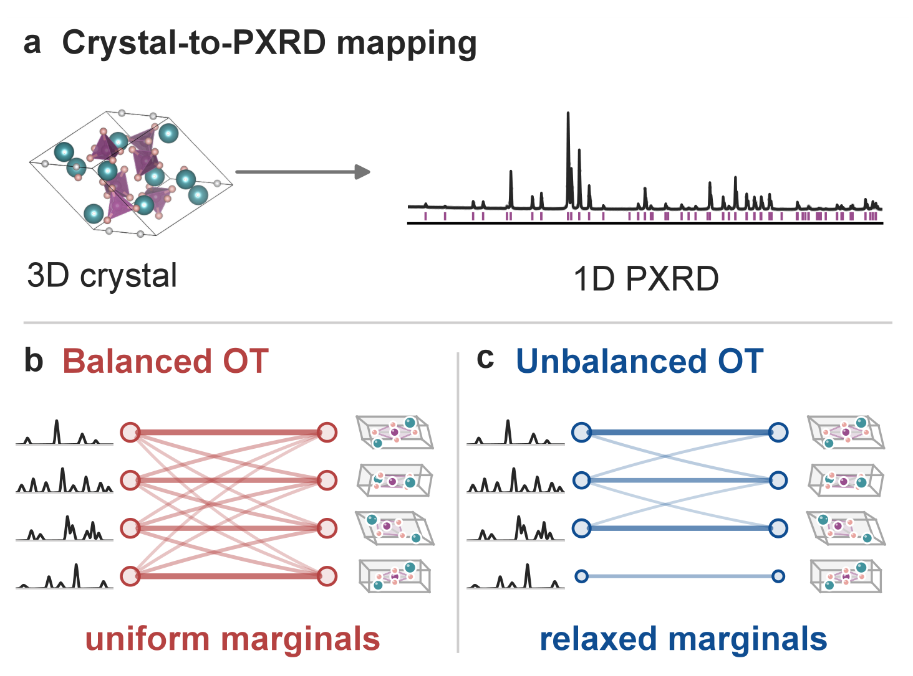
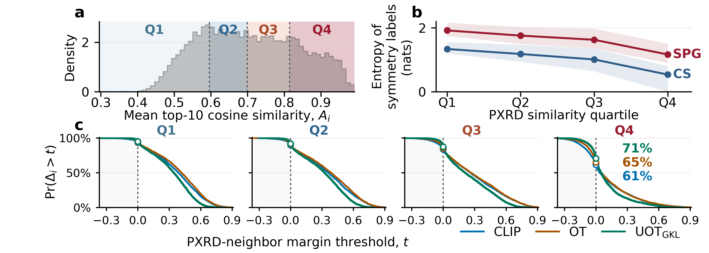

PXtal：让粉末衍射与晶体结构按各自保留的信息学会匹配
论文原文 ↗Zhuoran Yang、Christopher M. Collins、Bei Peng、Luke M. Daniels、Matthew J. Rosseinsky、Vladimir V. Gusev，PXtal: Learning to Align Powder X-Ray Diffraction and Crystal Structures under Information Asymmetry across Modalities，arXiv，2026。官方页面｜原始 PDF
一个三维晶体可以计算出粉末 X 射线衍射（PXRD）曲线，反过来，一条曲线却可能与多个晶体相似。粉末平均压缩了方向信息，峰重叠把不同反射挤到一起，衍射强度又丢失了结构因子的相位。因此，一份晶体与它的衍射曲线虽然成对，携带的信息量却不对称。
机器学习可以把谱与结构编码为向量，用相似度给数据库候选排序。常见对比学习对每个真实配对施加相同的目标置信度，并把其他配对都作为负例。这样，一条特征鲜明的谱和一条周围挤满相似谱的谱，接受相同的匹配要求。PXtal 针对这一问题，让匹配权重随样本及其竞争候选调整，并监督完整的匹配关系。
方法怎样做：把成对谱和晶体变成可自适应的匹配矩阵
训练输入是一份 CIF 及由它模拟的 PXRD。CIF 给出晶胞、元素、原子位置及占位等结构信息；作者用 GSAS-II 模拟单相曲线。在大规模 CrystaLLM-v1 数据上，一条谱包含 5°–90° 内的 4096 个强度点，归一化后按 32 点切成一个片段。谱侧 Transformer 将这些片段结合起来，学习不同角度处峰与峰的联系；晶体侧 GemNet-T 图网络处理原子及周期邻居的几何，将局部信息汇总为整个晶体的向量。
两个编码器再把输出投影到同一个 512 维空间并归一化。向量是学习到的特征坐标，余弦相似度衡量两者方向是否接近。训练的一批数据中，模型计算每条谱与每个晶体的相似度，得到一张跨模态代价表：越相似，匹配代价越低。

原图 1｜a 展示三维结构到一维谱的信息压缩；b、c 比较平衡与非平衡最优输运。连线宽度是匹配权重，节点面积是一个样本分配的总匹配质量。
最优输运把这张代价表转为整体协调的匹配矩阵。可以将每一行理解为一条谱把匹配权重分给哪些晶体。平衡最优输运固定每行、每列的总权重相同，要求每个样本承担一样多的匹配质量。非平衡最优输运 UOT 则把这个硬约束改成软惩罚，让总权重随着当前样本和竞争关系变化，同时偏向低代价连接。
有了可变总量，还需要保留它的训练信号。若把每一行归一化，再用条件交叉熵监督，某行所有权重整体增大或缩小都不会改变损失。PXtal 改用广义 Kullback–Leibler 散度 GKL，直接比较预测匹配矩阵与真实配对矩阵，既监督权重如何分配，也监督总量。作者的分解表明，完整 GKL 同时包含边缘质量偏差和按质量加权的条件分配偏差；UOT 与 GKL 因而互相配合。
完整训练链是：成对谱与晶体进入编码器，生成全批相似度，UOT 求出可变质量的匹配矩阵，GKL 将它与已知配对比较，梯度再更新编码器。大规模训练还测试了 UFGOT 扩展，将各模态内部的邻居关系纳入目标，使匹配兼顾两侧的结构关系。
使用时，候选晶体的向量可以预先存好。查询谱经过谱编码器，与这些向量计算余弦相似度并排序，即得到数据库候选。两侧编码器还可以分别接到性质预测头：晶体表示用于能带、能量和力学性质，谱表示用于晶系、空间群和晶格估计。
主要结果：六个集合的检索改善，最拥挤谱邻域收益最大
匹配约束与监督方式共同提高检索
在 MP-100 的相同编码器和训练设置下，普通对比学习的第一名命中率为 67.26%，平衡最优输运为 71.71%，UOT 配条件交叉熵为 70.82%，UOTGKL 为 74.45%，前五名命中率为 93.34%。这组比较把两步改动的作用接起来：整体匹配有帮助，可变质量需要完整监督才能更好发挥。
使用最多约 205 万对谱—晶体训练时，同编码器对比学习的第一名命中率为 97.73%，UOTGKL 为 98.82%。作者又在去除训练重合结构的四个外部集合上直接使用预训练模型，检验跨材料集合的迁移。
| 外部集合 | 对比学习 Acc@1 | UOTGKL Acc@1 |
|---|---|---|
| JARVIS-DFT-3D | 61.66% | 70.18% |
| Alex-MP-20 | 54.48% | 59.24% |
| QMOF | 11.09% | 20.99% |
| Perov-5 | 19.31% | 25.63% |
Acc@1 表示目标晶体排在第一名的比例。这四组分别涵盖无机晶体、较小晶胞、MOF 与配位聚合物、五原子钙钛矿，UOTGKL 均提高了准确候选的排序，体现了跨材料集合的迁移能力。
越相似的谱对应不同晶体时，自适应匹配越有用
作者进一步直接从归一化曲线出发，为每条谱找十条最近的非配对谱，再按平均相似度分为 Q1–Q4。Q4 的竞争谱最接近，而这些邻居仍平均横跨 4.36 个空间群、2.43 个晶系。它们提供了一个具体难题：输入曲线很像，但对应的晶体学身份不同。

原图 2｜a 将谱按近邻相似度分组；b 展示近邻的空间群和晶系分布；c 比较目标晶体胜过十个竞争候选的分数差。零点右侧表示目标排名领先。
在 Q4 的局部竞争测试中，目标胜过全部十个近邻的比例，从对比学习的 61.34%、平衡输运的 65.03%，提高到 UOTGKL 的 70.74%。放到 JARVIS 整个候选库，Q4 的第一名命中率由 45.29% 提高到 55.61%，增幅也大于最容易区分的 Q1。这直接回应了方法动机：当物理投影产生强竞争匹配时，让训练目标随样本调整，收益尤其明显。
两侧表示还可迁移到材料与晶体学任务
晶体编码器预训练后，在 Matbench 的带隙、形成能、金属分类及体积和剪切模量任务上微调，均优于相同网络从头训练。例如 UOTGKL 的带隙平均绝对误差为 0.1885 eV，从头训练为 0.2155 eV。跨模态训练因此也帮助网络获得可用于性质预测的结构特征。
谱编码器则用于预测晶系、空间群及晶格参数。作者既冻结编码器、只训练轻量预测头，也更新整个网络进行微调。在 JARVIS 上，UOTGKL 微调的晶系准确率为 91.58%，从头训练为 83.84%；晶格长度平均绝对误差由 0.48 Å 降至 0.21 Å。谱—结构对齐学到的峰间关系，继续服务于晶体学信息提取。
对领域的贡献
PXtal 将“物理观测丢失了哪些信息”落实到多模态学习目标中：UOT 调整样本的匹配质量，GKL 保留并监督这些变化，两侧编码器据此形成更有效的共同表示。检索、拥挤谱邻域和下游迁移三组结果，把这种设计与实际收益联系起来。
这项研究给出的一般认识是，科学多模态学习中的成对观测不必同样充分。将对齐目标设计为能够反映各模态保留的信息，既能改善从观测到候选的检索，也能让训练出的表示进入后续材料和表征任务。
附：完整原始摘要中文翻译
科学多模态学习通常假设，成对的不同观测视图具有相近的信息量。粉末X射线衍射（PXRD）明确暴露了这一不匹配：把三维晶体结构压缩为一维衍射图谱会丢失信息，使图谱更难与产生它的晶体结构联系起来。我们提出PXtal，一个在这种由物理过程规定的信息不对称下，学习对齐PXRD与晶体表示的框架。PXtal使用非平衡最优输运（UOT）调整跨模态耦合，并以耦合层面的广义Kullback–Leibler（GKL）散度监督完整输运计划。在六个测试集上，其中包括四个零样本迁移集，PXtal在PXRD到晶体的候选检索中始终优于基线模型；当PXRD图谱有接近但晶体学上不同的非配对近邻，即相似输入图谱对应不同晶体时，收益最大。得到的晶体和PXRD编码器，也能更有效地迁移到下游材料与晶体学任务。这些结果将信息不对称确立为科学多模态学习中的一个普遍设计问题：对齐目标应反映每种模态保留的信息。